The fleet.
Climate-controlled restrooms, showers, water and wash stations, the plastics, and the tankers that keep a site running. Every unit arrives clean and stocked, on a service cadence sized to your headcount.
Private rooms for big crews.
Our own SeaCan line and the trailers that go with it: climate controlled, winterized, built to survive a jobsite. No RV parts, no plumbed fixtures waiting to break.
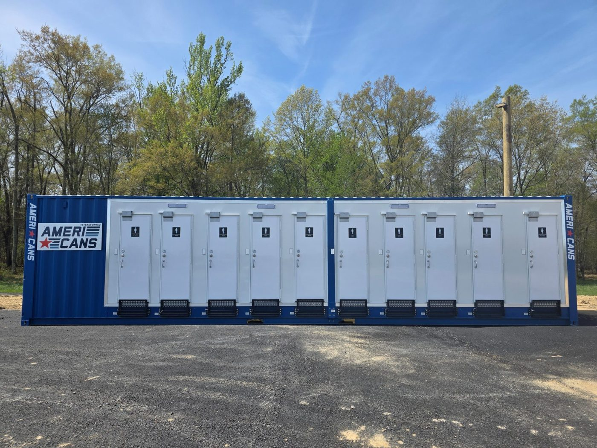
MARK IV
Ten private, exterior-entry rooms with full-size flushing toilets, hot handwash and climate control in one 40 ft SeaCan. 1,000 gal fresh, 1,100 gal holding, badged entry on request.
10 private rooms · 1,000 gal fresh · 200 ARequest this unit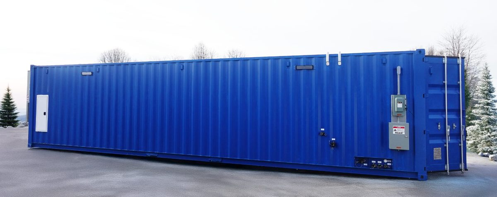
SeaCan, 15 head
Our modular restroom in a high-cube container: ten stalls and two urinals on the men’s side, three stalls on the women’s. Climate controlled, forced-air ventilation, all but weatherproof.
15 heads · climate controlled · forced airRequest this unit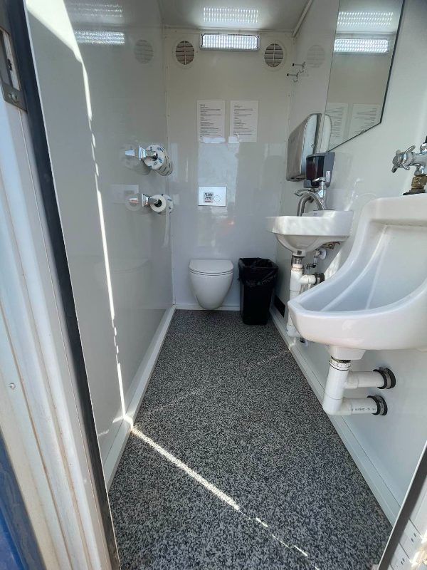
SeaCan, 12 head with sinks
The SeaCan with on-demand hot-water sinks. Self-contained and weatherproof, with an onboard water supply good for about 600 uses between fills.
12 heads · hot-water sinks · 600 uses onboardRequest this unit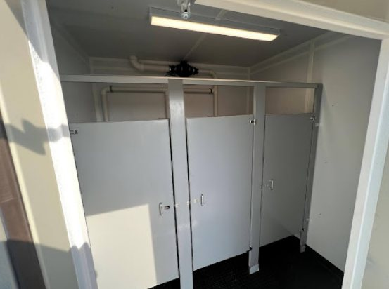
Hoplite
Our proprietary restroom trailer, planned around dependability and simplicity: forced-air climate control and none of the mechanical risks that sideline standard trailers. Spartan on purpose, fast to deploy.
Proprietary · forced air · rapid deploymentRequest this unit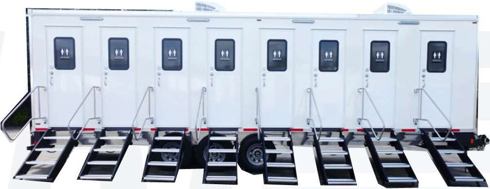
8-Stall Restroom Trailer
Eight private, exterior-entry cabins with flushing reservoir toilets, urinals and sinks. Compartment heaters and HVAC, fully winterized, 35 ft.
8 cabins · 400 gal fresh · 990 gal wasteRequest this unit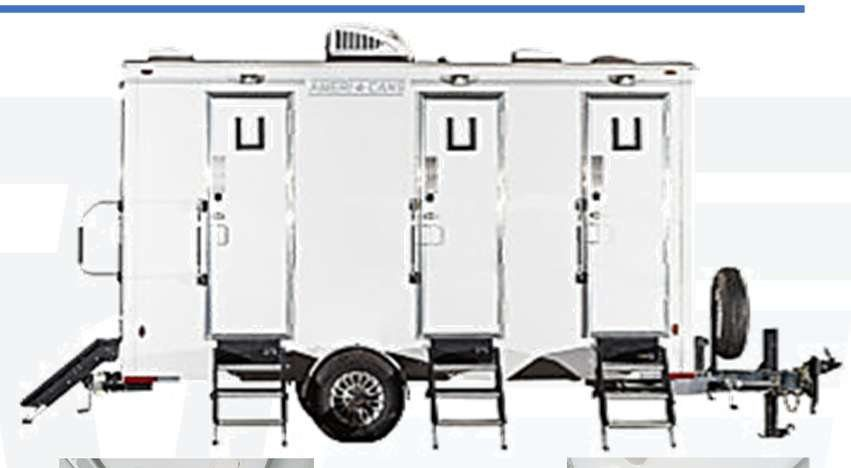
4-Stall Restroom Trailer
Four stalls with flushing toilets, sinks, paper towels and soap, every door direct to the outside. HVAC, winterized, 19 or 23 ft.
4 stalls · 200 gal fresh · 440 gal wasteRequest this unitRestrooms your guests will not talk about.
Set-aside, event-only inventory: trailers and units that have never seen a jobsite, with foot-activated flushing, stainless metered sinks, heat and air.
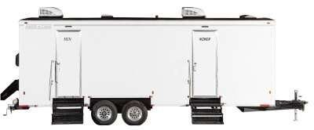
10-Station Restroom Trailer
Two compartments built for traffic: men’s with 2 toilets, 3 urinals and 2 sinks; women’s with 5 toilets and 2 sinks. Foot-activated flushing, HVAC, winterized, 30 ft.
10 stations · 200 gal fresh · 980 gal wasteRequest this unit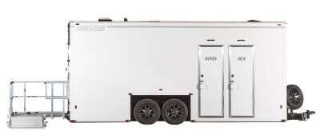
ADA +2 Restroom Trailer
A men’s stall with urinal, a women’s stall, and a fully ADA-compliant family stall with a baby changing station behind a hydraulic-lowering ramp.
3 stalls · 1 ADA · 425 gal wasteRequest this unit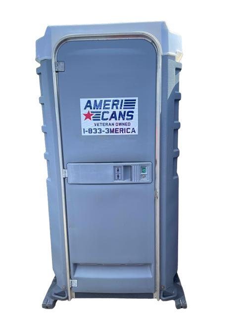
Event toilet with sink
The premium event unit: the same uniform look as the standard, with a flushing tank and a handwash sink inside the door.
Flushing · inside sink · special eventsRequest this unit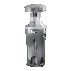
Handwash Station, Event
High-profile, two-sided handwash with extra paper-towel capacity on both sides, chosen for special events.
Two-sided · eventsRequest this unit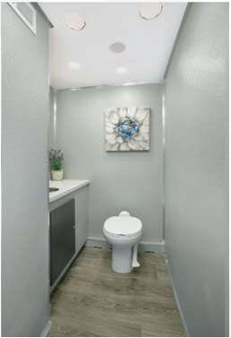
4-Stall Restroom Trailer
The right size for a wedding, a reunion or a corporate picnic: four private stalls, climate control, 19 or 23 ft.
4 stalls · HVAC · winterizedRequest this unit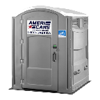
ADA units
Wheelchair-accessible portable toilets, standard or with sink, placed where your accessibility plan needs them.
ADA · accessibleRequest this unitShowers, boots and drinking water.
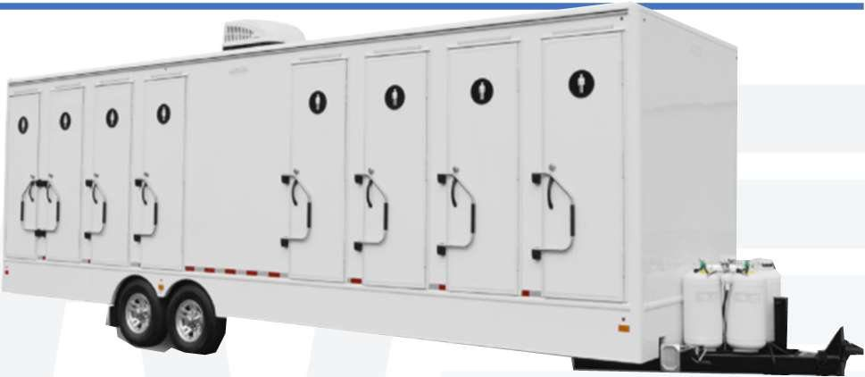
8-Stall Shower Trailer
Eight private shower cabins with dressing areas, garment hooks and hygiene sinks. HVAC, fully winterized, 32 ft.
8 showers · 200 gal fresh · 1,100 gal wasteRequest this unit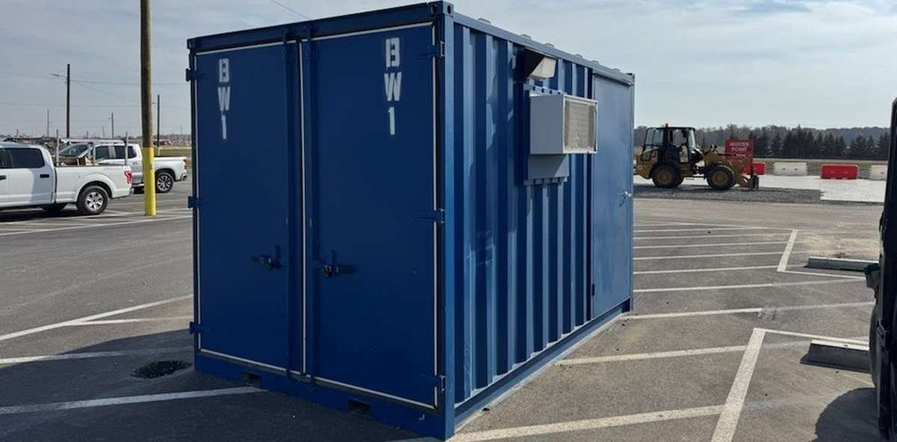
Bootwash Station
Four handheld washdown lines and a stability bar in a climate-controlled 20 ft container. Two doors, one-way flow, 400 gal onboard. Mud stays on the site side of the door.
4 lines · 400 gal · 20 ftRequest this unit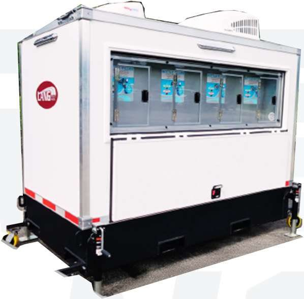
Water Station
Chilled drinking water on demand: four-stage filtration with UV, a 300 gal potable tank and four push-back fill stations. Fewer bottles, cleaner site.
300 gal potable · 4 fill stations · UVRequest this unitWater in, waste out, whatever the mains are doing.
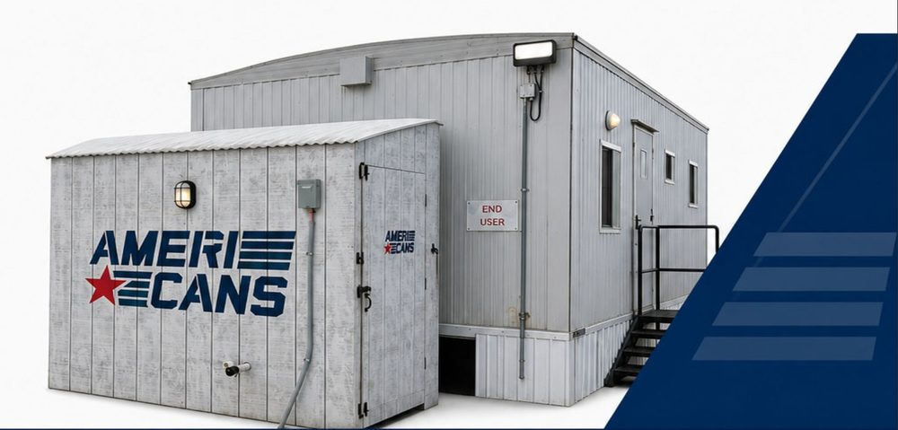
Temporary water delivery systems
A pump house built around your site: a 500 gal NSF-certified potable tank, two delivery pumps and heat-traced supply lines run to your trailers. Fills from the outside.
500 gal NSF tank · 2 pumps · heat tracedRequest this unit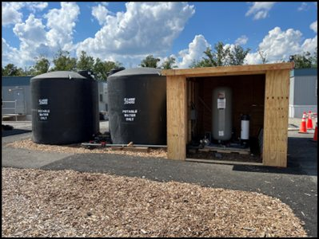
Temporary holding tanks
Paired with our water systems, or standing alone as overflow and event backup capacity.
Overflow · event backupRequest this unit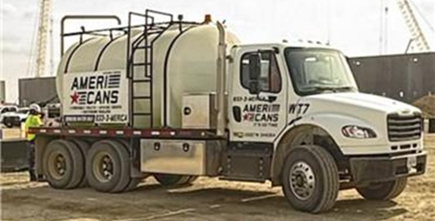
Bulk water delivery
Tankers that keep our equipment full and deliver potable water for projects, outages and emergencies, whether 100 or 100,000 gallons.
Potable · 24/7Request this unit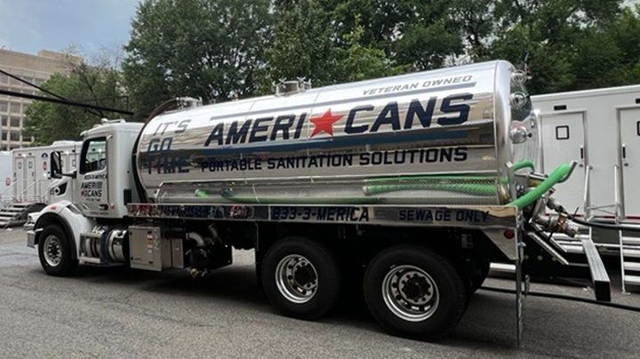
Bulk pump and haul
Pumping, hauling and proper disposal of effluent from sanitary and industrial applications, on the cadence your site needs.
Sanitary · industrial · disposalRequest this unitThe humble porta potty, done right.
Standard units for every kind of site, special units for cranes, hoists and elevators, and the handwash to go with them. Serviced weekly or on whatever cadence the headcount calls for.
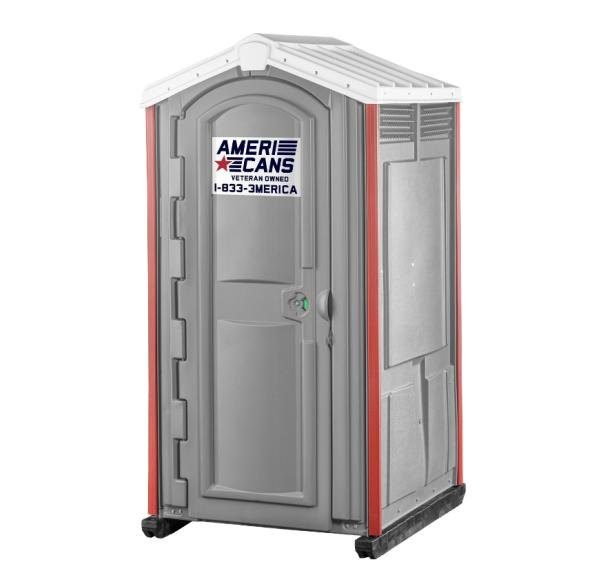
Standard unit
The workhorse for construction, commercial and residential jobs. Dark gray units for data center sites; women-only units on request.
Construction · residential · eventsRequest this unit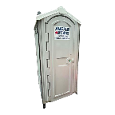
GoldStar toilet
Our standard unit, with 100% of the proceeds from its use donated to support Gold Star Families.
Standard unit · 100% donatedRequest this unit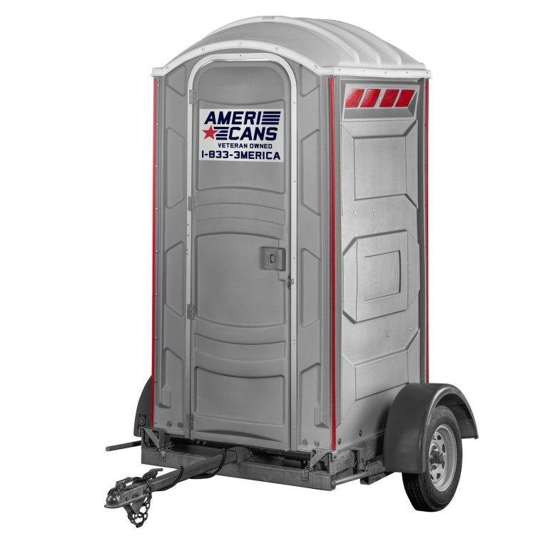
Highway trailer
A towable frame that carries one standard unit, for road projects and sites that move. 2 in ball, 4-pole wiring.
Towable · road projectsRequest this unit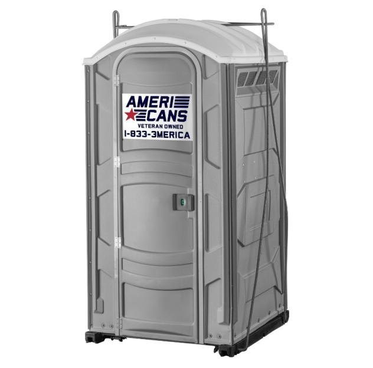
Crane-capable unit
A standard unit in a hoist frame, for decks, elevated and isolated work.
Hoist kit · elevated workRequest this unit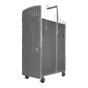
Hoist and high-rise unit
A slim unit sized for hoists, elevators and interior high-rise work.
High-rise · hoistRequest this unit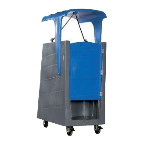
Half-high and squat units
Short units on casters, folding roof, for low-clearance elevators and cranes.
Casters · elevators · cranesRequest this unit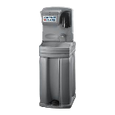
Handwash Station, Construction
Basic, reliable, two-sided and low profile. Built for busy sites.
Two-sided · low profileRequest this unit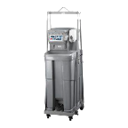
Handwash Station, Hoist
Rugged, low-profile handwash with a hoist kit and casters for interior, high-rise and industrial sites.
Hoist kit · castersRequest this unitTell us the headcount. We do the math.
Send the site address, the start date and the expected peak headcount. We size the fleet, the water and the service cadence, and come back with a layout and a price. Cut sheets and critical specifications for every powered unit are in one PDF.
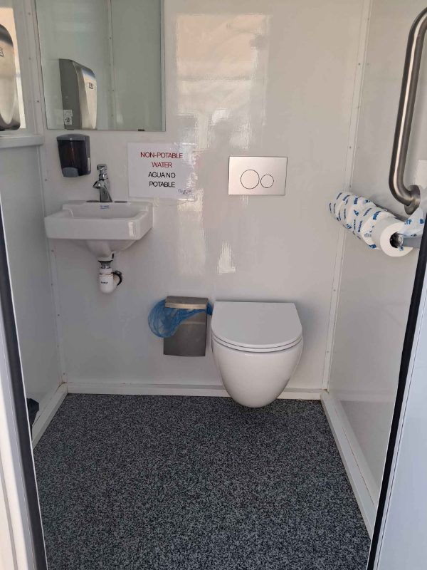